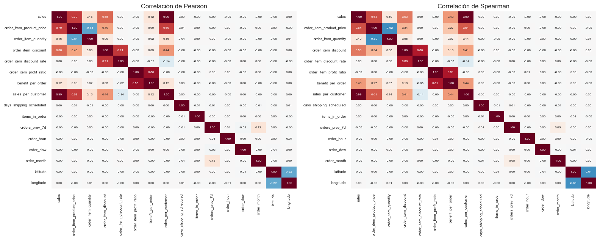
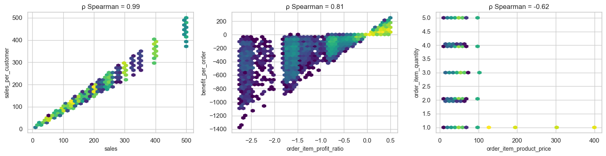
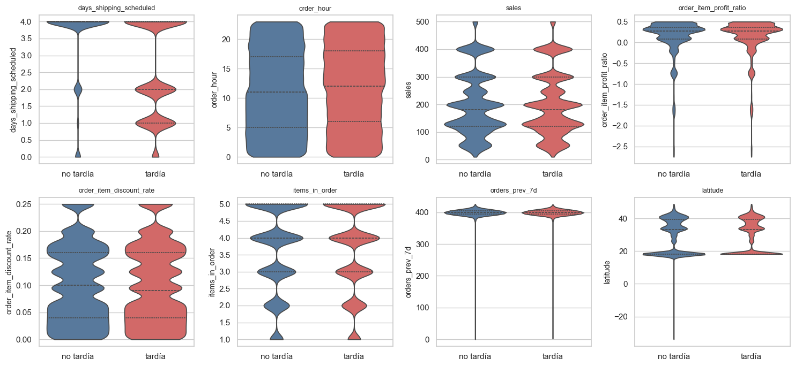
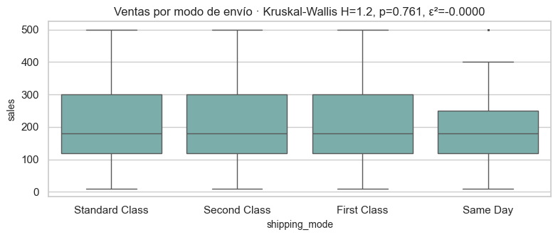
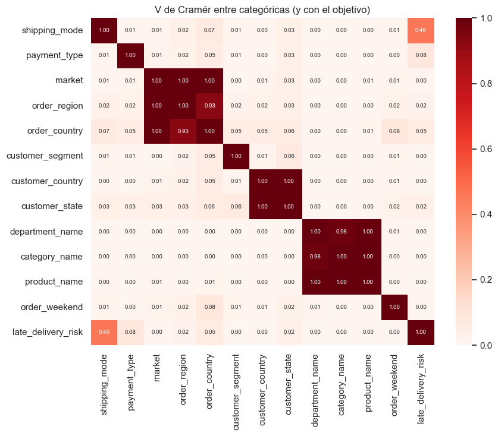
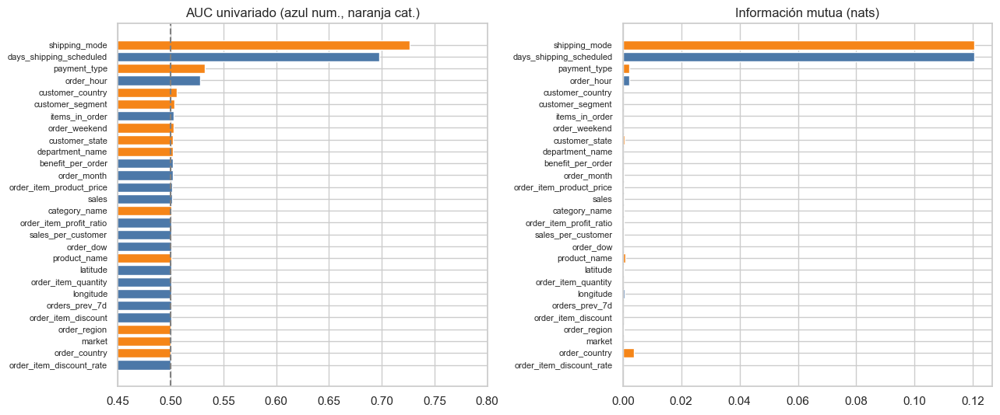

5. Análisis bivariado (2.3)#
Numéricas vs numéricas, categóricas vs numéricas, categóricas vs categóricas, predictoras vs objetivo (incluida información mutua), matriz de correlación y multicolinealidad (VIF). Con n ≈ 143.000 casi toda diferencia es significativa, así que se reportan tamaños de efecto junto a los p-valores y se corrige por comparaciones múltiples (FDR de Benjamini-Hochberg). Solo entrenamiento.
from pathlib import Path
import re, sys, warnings
import numpy as np
import pandas as pd
import matplotlib.pyplot as plt
import seaborn as sns
from IPython.display import Markdown, display
project_root = Path.cwd().resolve()
while not (project_root / "_config.yml").exists():
if project_root.parent == project_root:
raise FileNotFoundError("No se encontró _config.yml. Ejecuta el notebook dentro de la carpeta del libro.")
project_root = project_root.parent
if str(project_root) not in sys.path:
sys.path.insert(0, str(project_root))
for _folder in ("tables", "figures"): # se crean si no existen
(project_root / _folder).mkdir(exist_ok=True)
from src.project_utils import *
configure_plots()
pd.set_option("display.max_columns", 80)
pd.set_option("display.width", 170)
pd.set_option("display.max_colwidth", 70)
TABLES = project_root / "tables"
def md_out(text):
display(Markdown(text))
from scipy import stats
from sklearn.feature_selection import mutual_info_classif
train = load_train()
y = train[TARGET]
NUM = ["sales", "order_item_product_price", "order_item_quantity", "order_item_discount", "order_item_discount_rate",
"order_item_profit_ratio", "benefit_per_order", "sales_per_customer", "days_shipping_scheduled",
"items_in_order", "orders_prev_7d", "order_hour", "order_dow", "order_month", LAT, LON]
CAT = ["shipping_mode", "payment_type", "market", "order_region", "order_country", "customer_segment",
"customer_country", "customer_state", "department_name", "category_name", "product_name", "order_weekend"]
folds = temporal_folds(train[DATE_COL])
Numéricas vs numéricas#
Correlaciones de Pearson (lineal) y Spearman (monótona), y diagramas hexbin (n grande) para los pares más relacionados.
pear, spear = train[NUM].corr("pearson"), train[NUM].corr("spearman")
fig, axes = plt.subplots(1, 2, figsize=(16, 6.5))
for ax, m, t in zip(axes, [pear, spear], ["Pearson", "Spearman"]):
sns.heatmap(m, cmap="RdBu_r", vmin=-1, vmax=1, ax=ax, annot=True, fmt=".2f", annot_kws={"size": 6}, cbar=False)
ax.set_title(f"Correlación de {t}"); ax.tick_params(labelsize=7)
plt.tight_layout(); save_figure(fig, "05_correlaciones.png"); plt.show()
pares = []
for i, a in enumerate(NUM):
for b in NUM[i + 1:]:
pares.append({"var_1": a, "var_2": b, "pearson": pear.loc[a, b], "spearman": spear.loc[a, b]})
pares = pd.DataFrame(pares).assign(abs_s=lambda d: d["spearman"].abs()).sort_values("abs_s", ascending=False).drop(columns="abs_s")
pares.to_csv(TABLES / "correlaciones_pares.csv", index=False)
display(pares.head(10).round(3))
fig, axes = plt.subplots(1, 3, figsize=(15, 4))
for ax, (a, b) in zip(axes, [("sales", "sales_per_customer"), ("order_item_profit_ratio", "benefit_per_order"), ("order_item_product_price", "order_item_quantity")]):
hb = ax.hexbin(train[a], train[b], gridsize=40, bins="log", cmap="viridis", mincnt=1)
ax.set_xlabel(a); ax.set_ylabel(b); ax.set_title(f"ρ Spearman = {spear.loc[a, b]:.2f}")
plt.tight_layout(); save_figure(fig, "05_hexbin.png"); plt.show()

| var_1 | var_2 | pearson | spearman | |
|---|---|---|---|---|
| 6 | sales | sales_per_customer | 0.987 | 0.986 |
| 65 | order_item_profit_ratio | benefit_per_order | 0.861 | 0.813 |
| 42 | order_item_discount | order_item_discount_rate | 0.711 | 0.804 |
| 0 | sales | order_item_product_price | 0.700 | 0.643 |
| 15 | order_item_product_price | order_item_quantity | -0.537 | -0.623 |
| 20 | order_item_product_price | sales_per_customer | 0.691 | 0.614 |
| 119 | latitude | longitude | -0.521 | -0.611 |
| 2 | sales | order_item_discount | 0.577 | 0.525 |
| 75 | benefit_per_order | sales_per_customer | 0.124 | 0.437 |
| 5 | sales | benefit_per_order | 0.122 | 0.431 |

Interpretación. Hay tres bloques redundantes: (i) ventas (sales,
sales_per_customer, precio, descuento), (ii) ganancia (benefit_per_order y
order_item_profit_ratio, ρ ≈ 0,9) y (iii) precio vs cantidad (relación negativa: los
productos caros se compran de a uno). Las variables de calendario, carga y coordenadas
son prácticamente independientes del resto. Las relaciones no lineales (por ejemplo,
ganancia vs margen, que depende del monto) se ven en los hexbin.
Categóricas vs numéricas y predictoras numéricas vs objetivo#
Se comparan las distribuciones de cada numérica entre entregas tardías y no tardías con Mann-Whitney (no paramétrica; las variables no son normales) y su tamaño de efecto rank-biserial (|r| < 0,1 despreciable). Además, una categórica vs numérica clave: el monto de venta según el modo de envío (Kruskal-Wallis, efecto ε²).
filas = []
for col in NUM:
a, b = train.loc[y == 1, col], train.loc[y == 0, col]
u, p = stats.mannwhitneyu(a, b, alternative="two-sided")
filas.append({"variable": col, "mediana_tardía": a.median(), "mediana_no_tardía": b.median(),
"rank_biserial": 2 * u / (len(a) * len(b)) - 1, "p_valor": p})
mw = pd.DataFrame(filas)
mw["p_fdr"] = fdr_bh(mw["p_valor"])
mw["efecto"] = pd.cut(mw["rank_biserial"].abs(), [-1, 0.1, 0.3, 0.5, 1], labels=["despreciable", "pequeño", "mediano", "grande"])
mw.to_csv(TABLES / "numericas_vs_objetivo.csv", index=False)
display(mw.sort_values("rank_biserial", key=abs, ascending=False).round(4))
fig, axes = plt.subplots(2, 4, figsize=(15, 7))
sel = ["days_shipping_scheduled", "order_hour", "sales", "order_item_profit_ratio", "order_item_discount_rate", "items_in_order", "orders_prev_7d", LAT]
for ax, col in zip(axes.ravel(), sel):
sns.violinplot(x=y.map({0: "no tardía", 1: "tardía"}), y=train[col], ax=ax, cut=0, inner="quartile",
hue=y.map({0: "no tardía", 1: "tardía"}), palette=["#4c78a8", "#e45756"], legend=False)
ax.set_xlabel(""); ax.set_title(col, fontsize=9)
plt.tight_layout(); save_figure(fig, "05_violines.png"); plt.show()
g = [train.loc[train["shipping_mode"] == m, "sales"] for m in train["shipping_mode"].unique()]
h, pk = stats.kruskal(*g)
eps2 = (h - len(g) + 1) / (len(train) - len(g))
fig, ax = plt.subplots(figsize=(8, 3.5))
sns.boxplot(data=train, x="shipping_mode", y="sales", ax=ax, color="#72b7b2", fliersize=1)
ax.set_title(f"Ventas por modo de envío · Kruskal-Wallis H={h:.1f}, p={pk:.3g}, ε²={eps2:.4f}")
plt.tight_layout(); save_figure(fig, "05_categorica_numerica.png"); plt.show()
| variable | mediana_tardía | mediana_no_tardía | rank_biserial | p_valor | p_fdr | efecto | |
|---|---|---|---|---|---|---|---|
| 8 | days_shipping_scheduled | 2.0000 | 4.0000 | -0.3955 | 0.0000 | 0.0000 | mediano |
| 11 | order_hour | 12.0000 | 11.0000 | 0.0561 | 0.0000 | 0.0000 | despreciable |
| 9 | items_in_order | 4.0000 | 4.0000 | 0.0060 | 0.0429 | 0.2289 | despreciable |
| 6 | benefit_per_order | 30.8900 | 31.2900 | -0.0038 | 0.2125 | 0.7212 | despreciable |
| 13 | order_month | 6.0000 | 6.0000 | 0.0037 | 0.2254 | 0.7212 | despreciable |
| 1 | order_item_product_price | 59.9900 | 59.9900 | -0.0028 | 0.3529 | 0.8458 | despreciable |
| 0 | sales | 179.9700 | 179.9700 | -0.0021 | 0.4863 | 0.8458 | despreciable |
| 5 | order_item_profit_ratio | 0.2700 | 0.2700 | -0.0019 | 0.5278 | 0.8458 | despreciable |
| 7 | sales_per_customer | 159.9900 | 159.9900 | -0.0019 | 0.5368 | 0.8458 | despreciable |
| 12 | order_dow | 3.0000 | 3.0000 | 0.0018 | 0.5610 | 0.8458 | despreciable |
| 14 | latitude | 33.1825 | 33.1360 | -0.0015 | 0.6361 | 0.8458 | despreciable |
| 2 | order_item_quantity | 1.0000 | 1.0000 | 0.0011 | 0.7002 | 0.8458 | despreciable |
| 15 | longitude | -76.9319 | -76.8672 | 0.0010 | 0.7424 | 0.8458 | despreciable |
| 10 | orders_prev_7d | 399.0000 | 399.0000 | 0.0008 | 0.7923 | 0.8458 | despreciable |
| 3 | order_item_discount | 14.0000 | 14.0000 | -0.0008 | 0.7929 | 0.8458 | despreciable |
| 4 | order_item_discount_rate | 0.0900 | 0.1000 | -0.0002 | 0.9447 | 0.9447 | despreciable |


Interpretación. Los p-valores son pequeños en varias variables, pero los
tamaños de efecto cuentan la historia real: solo days_shipping_scheduled tiene un
efecto apreciable (los envíos con más días programados —Standard— llegan tarde menos
veces); el resto de numéricas tiene |r| < 0,05. La hora del pedido muestra un efecto
pequeño (se explica en el cap. 7: es una hora de corte en Same Day). El monto de venta no depende del modo de envío (ε² ≈ 0): los clientes no
eligen el envío según el valor del pedido, de modo que no hay confusión entre ambos.
Categóricas vs categóricas#
Tablas de contingencia, prueba χ² y V de Cramér (con corrección de sesgo) entre todos los pares de categóricas y con el objetivo.
CATS_V = CAT + [TARGET]
V = pd.DataFrame(np.eye(len(CATS_V)), index=CATS_V, columns=CATS_V)
filas = []
for i, a in enumerate(CATS_V):
for b in CATS_V[i + 1:]:
v, chi2, p = cramers_v(train[a], train[b])
V.loc[a, b] = V.loc[b, a] = v
filas.append({"var_1": a, "var_2": b, "V_cramer": v, "chi2": chi2, "p_valor": p})
cram = pd.DataFrame(filas)
cram["p_fdr"] = fdr_bh(cram["p_valor"])
cram.to_csv(TABLES / "cramer_pares.csv", index=False)
fig, ax = plt.subplots(figsize=(9, 7.5))
sns.heatmap(V.astype(float), cmap="Reds", vmin=0, vmax=1, annot=True, fmt=".2f", annot_kws={"size": 7}, ax=ax)
ax.set_title("V de Cramér entre categóricas (y con el objetivo)")
plt.tight_layout(); save_figure(fig, "05_cramer.png"); plt.show()
display(cram.sort_values("V_cramer", ascending=False).head(12).round(4))
display(pd.crosstab(train["shipping_mode"], y, margins=True, normalize="index").round(3))

| var_1 | var_2 | V_cramer | chi2 | p_valor | p_fdr | |
|---|---|---|---|---|---|---|
| 23 | market | order_region | 0.9999 | 5.723000e+05 | 0.0 | 0.0 |
| 72 | category_name | product_name | 0.9999 | 3.290725e+06 | 0.0 | 0.0 |
| 57 | customer_country | customer_state | 0.9999 | 1.430750e+05 | 0.0 | 0.0 |
| 69 | department_name | product_name | 0.9998 | 7.153750e+05 | 0.0 | 0.0 |
| 24 | market | order_country | 0.9994 | 5.723000e+05 | 0.0 | 0.0 |
| 68 | department_name | category_name | 0.9844 | 6.933248e+05 | 0.0 | 0.0 |
| 33 | order_region | order_country | 0.9288 | 2.718425e+06 | 0.0 | 0.0 |
| 11 | shipping_mode | late_delivery_risk | 0.4584 | 3.006947e+04 | 0.0 | 0.0 |
| 48 | order_country | order_weekend | 0.0808 | 1.097823e+03 | 0.0 | 0.0 |
| 22 | payment_type | late_delivery_risk | 0.0754 | 8.164063e+02 | 0.0 | 0.0 |
| 3 | shipping_mode | order_country | 0.0689 | 2.528025e+03 | 0.0 | 0.0 |
| 51 | customer_segment | customer_state | 0.0645 | 1.277988e+03 | 0.0 | 0.0 |
| late_delivery_risk | 0 | 1 |
|---|---|---|
| shipping_mode | ||
| First Class | 0.044 | 0.956 |
| Same Day | 0.552 | 0.448 |
| Second Class | 0.233 | 0.767 |
| Standard Class | 0.618 | 0.382 |
| All | 0.451 | 0.549 |
Interpretación. Las categóricas geográficas están anidadas (país → región →
mercado: V ≈ 1) y las de producto también (producto → categoría → departamento). Usar
todas a la vez sería redundante: se elige un nivel por jerarquía (cap. 10). Con el
objetivo, solo shipping_mode tiene una asociación relevante (V ≈ 0,4); el resto tiene
V < 0,05 aunque varias sean «significativas» tras FDR.
Predictoras vs objetivo: información mutua y AUC univariado#
La información mutua capta relaciones no lineales; el AUC univariado mide cuánto separa cada variable por sí sola (0,5 = nada; 1 = perfecto). Las categóricas se codifican con la tasa del objetivo calculada fuera de pliegue con los pliegues temporales (sin fuga).
rng = np.random.default_rng(RANDOM_STATE)
idx = rng.choice(len(train), 40000, replace=False)
# Las numéricas se discretizan en (hasta) 20 cuantiles: el estimador k-NN de información mutua se sesga
# cuando hay muchos valores repetidos (precios, coordenadas de una misma ciudad).
Xmi = pd.DataFrame({c: (train[c].iloc[idx] if train[c].nunique() <= 30
else pd.qcut(train[c].iloc[idx], 20, labels=False, duplicates="drop")) for c in NUM})
mi_num = mutual_info_classif(Xmi, y.iloc[idx], discrete_features=True, random_state=RANDOM_STATE)
Xc = pd.DataFrame({c: pd.factorize(train[c].iloc[idx].astype(str))[0] for c in CAT})
mi_cat = mutual_info_classif(Xc, y.iloc[idx], discrete_features=True, random_state=RANDOM_STATE)
rank = pd.DataFrame({"variable": NUM + CAT, "tipo": ["numérica"] * len(NUM) + ["categórica"] * len(CAT),
"información_mutua": np.r_[mi_num, mi_cat]})
rank["AUC univariado"] = [univariate_auc(train[c], y) if t == "numérica" else categorical_auc_oof(train[c], y, folds)
for c, t in zip(rank["variable"], rank["tipo"])]
rank = rank.sort_values("AUC univariado", ascending=False).reset_index(drop=True)
rank.to_csv(TABLES / "ranking_univariado.csv", index=False)
display(rank.round(4))
fig, axes = plt.subplots(1, 2, figsize=(13, 5.5))
r = rank.iloc[::-1]
axes[0].barh(r["variable"], r["AUC univariado"], color=np.where(r["tipo"] == "numérica", "#4c78a8", "#f58518"))
axes[0].axvline(0.5, color="gray", ls="--"); axes[0].set_xlim(0.45, 0.8); axes[0].set_title("AUC univariado (azul num., naranja cat.)")
axes[1].barh(r["variable"], r["información_mutua"], color=np.where(r["tipo"] == "numérica", "#4c78a8", "#f58518"))
axes[1].set_title("Información mutua (nats)")
for ax in axes: ax.tick_params(axis="y", labelsize=8)
plt.tight_layout(); save_figure(fig, "05_ranking_univariado.png"); plt.show()
c:\Users\juand\miniconda3\envs\ml_venv\lib\site-packages\sklearn\metrics\cluster\_supervised.py:59: UserWarning: Clustering metrics expects discrete values but received continuous values for label, and binary values for target
warnings.warn(msg, UserWarning)
c:\Users\juand\miniconda3\envs\ml_venv\lib\site-packages\sklearn\metrics\cluster\_supervised.py:59: UserWarning: Clustering metrics expects discrete values but received continuous values for label, and binary values for target
warnings.warn(msg, UserWarning)
| variable | tipo | información_mutua | AUC univariado | |
|---|---|---|---|---|
| 0 | shipping_mode | categórica | 0.1206 | 0.7265 |
| 1 | days_shipping_scheduled | numérica | 0.1206 | 0.6978 |
| 2 | payment_type | categórica | 0.0021 | 0.5323 |
| 3 | order_hour | numérica | 0.0021 | 0.5280 |
| 4 | customer_country | categórica | 0.0000 | 0.5062 |
| 5 | customer_segment | categórica | 0.0000 | 0.5033 |
| 6 | items_in_order | numérica | 0.0001 | 0.5030 |
| 7 | order_weekend | categórica | 0.0000 | 0.5027 |
| 8 | customer_state | categórica | 0.0006 | 0.5025 |
| 9 | department_name | categórica | 0.0000 | 0.5024 |
| 10 | benefit_per_order | numérica | 0.0001 | 0.5019 |
| 11 | order_month | numérica | 0.0002 | 0.5019 |
| 12 | order_item_product_price | numérica | 0.0004 | 0.5014 |
| 13 | sales | numérica | 0.0002 | 0.5011 |
| 14 | category_name | categórica | 0.0003 | 0.5010 |
| 15 | order_item_profit_ratio | numérica | 0.0002 | 0.5010 |
| 16 | sales_per_customer | numérica | 0.0002 | 0.5009 |
| 17 | order_dow | numérica | 0.0001 | 0.5009 |
| 18 | product_name | categórica | 0.0008 | 0.5009 |
| 19 | latitude | numérica | 0.0004 | 0.5007 |
| 20 | order_item_quantity | numérica | 0.0001 | 0.5005 |
| 21 | longitude | numérica | 0.0006 | 0.5005 |
| 22 | orders_prev_7d | numérica | 0.0002 | 0.5004 |
| 23 | order_item_discount | numérica | 0.0002 | 0.5004 |
| 24 | order_region | categórica | 0.0004 | 0.5003 |
| 25 | market | categórica | 0.0001 | 0.5002 |
| 26 | order_country | categórica | 0.0038 | 0.5002 |
| 27 | order_item_discount_rate | numérica | 0.0002 | 0.5001 |

Multicolinealidad (VIF)#
vif = pd.DataFrame({"variable": NUM, "VIF": variance_inflation_factors(train[NUM].to_numpy())}).sort_values("VIF", ascending=False)
vif.to_csv(TABLES / "vif_numericas.csv", index=False)
display(vif.round(2))
NUM_RED = [c for c in NUM if c not in ("sales_per_customer", "benefit_per_order", "order_item_discount", "days_shipping_scheduled")]
vif2 = pd.DataFrame({"variable": NUM_RED, "VIF": variance_inflation_factors(train[NUM_RED].to_numpy())}).sort_values("VIF", ascending=False)
vif2.to_csv(TABLES / "vif_numericas_reducido.csv", index=False)
NUM_RED2 = [c for c in NUM_RED if c != "order_item_product_price"]
vif3 = variance_inflation_factors(train[NUM_RED2].to_numpy())
md_out(f"Tras quitar las columnas redundantes (copias de ventas/ganancia/descuento y los días programados, equivalentes a `shipping_mode`), "
f"el VIF máximo baja a **{es(vif2['VIF'].max(), 2)}** ({vif2.iloc[0]['variable']}), porque `sales` = precio × cantidad. "
f"Si además se omite el precio (su información queda en ventas y cantidad), el VIF máximo es **{es(vif3.max(), 2)}**.")
display(vif2.round(2))
| variable | VIF | |
|---|---|---|
| 0 | sales | 5.735459e+09 |
| 7 | sales_per_customer | 4.749347e+09 |
| 3 | order_item_discount | 1.770601e+08 |
| 1 | order_item_product_price | 1.234000e+01 |
| 2 | order_item_quantity | 6.450000e+00 |
| 6 | benefit_per_order | 4.130000e+00 |
| 4 | order_item_discount_rate | 4.130000e+00 |
| 5 | order_item_profit_ratio | 4.070000e+00 |
| 14 | latitude | 1.370000e+00 |
| 15 | longitude | 1.370000e+00 |
| 10 | orders_prev_7d | 1.020000e+00 |
| 13 | order_month | 1.020000e+00 |
| 12 | order_dow | 1.000000e+00 |
| 8 | days_shipping_scheduled | 1.000000e+00 |
| 9 | items_in_order | 1.000000e+00 |
| 11 | order_hour | 1.000000e+00 |
Tras quitar las columnas redundantes (copias de ventas/ganancia/descuento y los días programados, equivalentes a shipping_mode), el VIF máximo baja a 12,31 (order_item_product_price), porque sales = precio × cantidad. Si además se omite el precio (su información queda en ventas y cantidad), el VIF máximo es 1,37.
| variable | VIF | |
|---|---|---|
| 1 | order_item_product_price | 12.31 |
| 0 | sales | 8.99 |
| 2 | order_item_quantity | 6.43 |
| 10 | latitude | 1.37 |
| 11 | longitude | 1.37 |
| 6 | orders_prev_7d | 1.02 |
| 9 | order_month | 1.02 |
| 8 | order_dow | 1.00 |
| 7 | order_hour | 1.00 |
| 5 | items_in_order | 1.00 |
| 4 | order_item_profit_ratio | 1.00 |
| 3 | order_item_discount_rate | 1.00 |
Interpretación y selección preliminar de variables.
Patrón dominante:
shipping_mode(y su equivalentedays_shipping_scheduled) es la única predictora con señal sustancial (AUC ≈ 0,73). Le siguen, muy lejos,payment_typey la hora del pedido (AUC ≈ 0,53); el resto está en 0,50–0,51.Alerta sobre
payment_type: su asociación con el objetivo (V ≈ 0,08) no se debe a que un medio de pago retrase envíos, sino a que los pedidos cancelados o sospechosos de fraude (etiqueta 0 por construcción) se concentran en un medio de pago. Se analiza en el capítulo 9.Relaciones no lineales e interacciones: el efecto de la hora no es lineal ni general; el capítulo 7 muestra que se concentra en los envíos Same Day (hora de corte del mediodía) → interacción modo × jornada y componentes cíclicos seno/coseno.
Multicolinealidad: VIF enormes entre ventas, total y descuento (combinaciones aritméticas) y VIF > 10 del precio, explicado por ventas × cantidad.
Selección preliminar (se formaliza en el cap. 10):
shipping_mode(no los días programados),payment_type,customer_segment,market,order_region,order_country(con agrupación de raras),department_name,category_name; numéricas no redundantes:sales,order_item_quantity,order_item_discount_rate,order_item_profit_ratio,items_in_order,orders_prev_7dy calendario cíclico. Las coordenadas se evalúan en el capítulo 8.